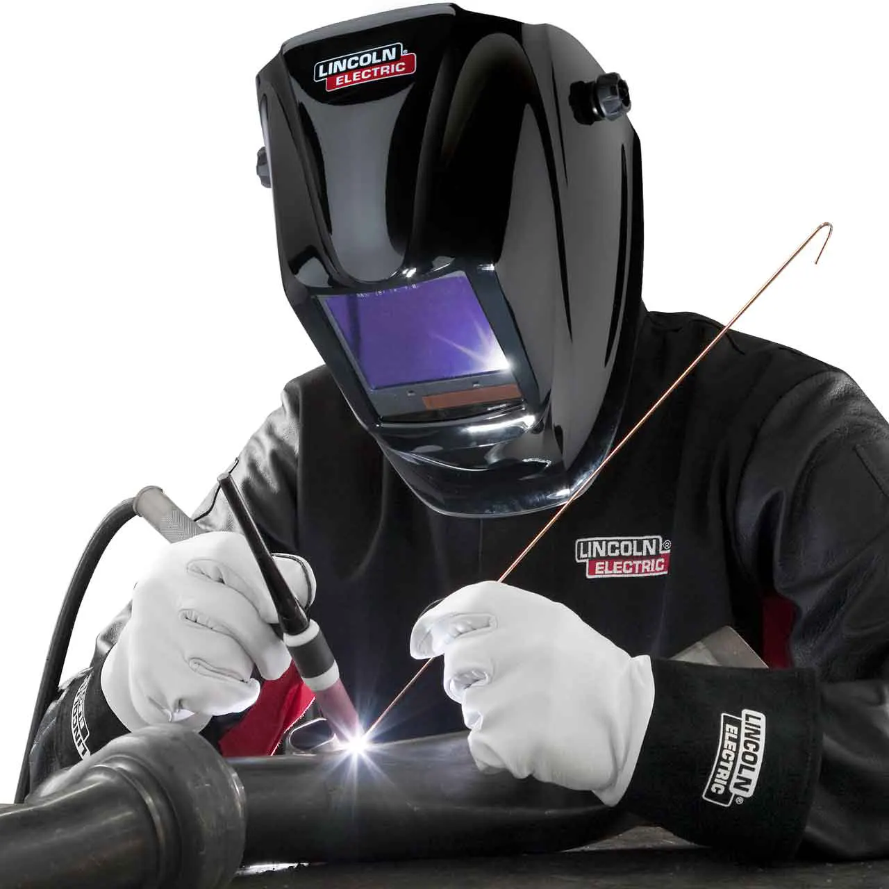

SOLDADURA TIG:
QUE ES LA SOLDADURA TIG?
Precisión y Calidad en la Industria de la Soldadura; La soldadura es una técnica fundamental en la industria metalúrgica y manufacturera, ya que permite la unión de materiales metálicos mediante la aplicación de calor. Dentro de los diferentes métodos existentes, la soldadura TIG (Tungsten Inert Gas), también conocida como GTAW (Gas Tungsten Arc Welding), se distingue por su alta precisión y calidad en los acabados. Este proceso es ampliamente utilizado en diversas industrias, desde la aeronáutica hasta la automoción, debido a sus múltiples ventajas frente a otros tipos de soldadura. El proceso de soldadura TIG se basa en el uso de un electrodo de tungsteno no consumible, el cual genera un arco eléctrico que funde el material base y, en algunos casos, un material de aporte. A diferencia de otros procesos de soldadura, el gas inerte, generalmente argón o helio, protege la zona de soldadura de la oxidación y la contaminación, lo que garantiza una soldadura limpia y de alta calidad. Esto es especialmente importante en materiales como el acero inoxidable, el aluminio y el titanio, donde la pureza de la soldadura es crucial para su resistencia y durabilidad. Entre las principales ventajas de la soldadura TIG se encuentra su precisión y control sobre el proceso. Dado que el soldador puede regular la intensidad del arco y la velocidad de alimentación del material de aporte de manera manual, es posible obtener uniones con acabados finos y sin salpicaduras. Además, al no utilizar un electrodo consumible, se evitan impurezas en la soldadura, lo que la hace ideal para aplicaciones que requieren alta resistencia mecánica y estética. Sin embargo, este tipo de soldadura también presenta ciertos desafíos. Uno de ellos es la necesidad de una mayor destreza por parte del operario, ya que el proceso requiere un control minucioso de la temperatura y la velocidad de avance. Asimismo, en comparación con otros métodos, la soldadura TIG puede ser más lenta y costosa, debido al uso de gases inertes y al equipamiento especializado. A pesar de ello, sus ventajas en términos de calidad y precisión hacen que sea la opción preferida en aplicaciones donde la resistencia y la estética de la soldadura son prioritarias. En conclusión, la soldadura TIG es un proceso altamente eficiente y confiable que se ha consolidado como una de las mejores opciones para la unión de materiales metálicos en la industria. Aunque su aplicación requiere mayor habilidad y costos iniciales más elevados, los resultados obtenidos justifican su uso en sectores donde la calidad es fundamental. Con el avance de la tecnología y la capacitación continua de los soldadores, este método seguirá desempeñando un papel crucial en la fabricación y mantenimiento de estructuras metálicas en el futuro.
PARA QUE LA EMPLEAMOS:
La soldadura TIG se emplea en diversas aplicaciones debido a su precisión, limpieza y resistencia. Algunas de las principales razones para utilizar este método incluyen:
- Uniones de alta calidad: Se usa cuando se requiere una soldadura limpia, sin impurezas ni salpicaduras, ideal para trabajos que necesitan un acabado estético.
- Soldadura en materiales especiales: Es la mejor opción para metales como aluminio, acero inoxidable, titanio, magnesio y aleaciones de níquel, los cuales requieren un control preciso del calor y una protección contra la oxidación.
- Industria aeronáutica y aeroespacial: Se usa en la fabricación y repara ción de estructuras que deben soportar altas temperaturas y esfuerzos mecánicos.
- Sector automotriz: Se aplica en la producción de chasis, escapes, depósi tos de combustible y otras partes que necesitan una soldadura fuerte y duradera.
- Fabricación de tuberías y sistemas de conducción: Se emplea en tuberías de acero inoxidable y aleaciones especiales, especialmente en la industria alimentaria, farmacéutica y de gases industriales.
- Soldadura en posiciones difíciles: Su precisión y control permiten realizar uniones en posiciones complicadas donde otros métodos serían menos eficientes.
- Arte y diseño metálico: Es utilizada en escultura, joyería y otros proyectos donde se requiere precisión y acabado limpio.
En resumen, la soldadura TIG se emplea en aplicaciones donde la calidad, la resistencia y el acabado son fundamentales, siendo la elección preferida en industrias de alta exigencia.
MODOS DE OSCILACION:
En la soldadura TIG, la oscilación es una técnica utilizada para mejorar la fusión, el control del cordón y la distribución del calor. Existen varias maneras de oscilar durante el proceso, dependiendo del tipo de unión y la aplicación específica. Algunas de las más comunes son:
- Movimiento en zigzag: Consiste en mover el electrodo de un lado a otro en forma de "Z" para distribuir el calor uniformemente y mejorar la penetración.
- Movimiento circular: Se usa para generar un cordón más uniforme y con mejor fusión, ideal para espesores delgados.
- Movimiento en forma de “U” o “V”: Es común en juntas a tope o en ángulo, asegurando una fusión pareja en los bordes.
- Oscilación en línea recta: Se aplica en materiales delgados para evitar sobrecalentamiento y deformaciones.
- Movimiento en espiral: Se emplea para mejorar la distribución del material de aporte en cordones anchos.
Cada técnica de oscilación se usa según el tipo de material, la posición de soldadura y el acabado deseado, permitiendo mayor control sobre la calidad del cordón y la penetración.

TECNICA DE TOBEREO:
La técnica de tobereo en soldadura TIG es un método que consiste en manipular la boquilla de la antorcha para mejorar la cobertura del gas protector y optimizar la fusión del material. Se emplea principalmente en soldaduras de alta precisión o en materiales sensibles a la contaminación, como acero inoxidable, aluminio y titanio.
¿En qué consiste el tobereo? El tobereo implica mover la antorcha de manera controlada y suave, inclinándola ligeramente hacia adelante o en un ángulo específico para dirigir el flujo de gas inerte (argón o helio) de manera más eficiente sobre el charco de soldadura. Este movimiento permite mejorar la protección del baño de fusión y evitar defectos como la porosidad o la contaminación por oxígeno y nitrógeno.
Beneficios del tobereo en TIG:
- Mejora la protección del gas: Evita la contaminación de la soldadura, garantizando un cordón limpio y resistente.
- Control de la fusión: Permite regular mejor la penetración y la forma del cordón.
- Reducción de defectos: Minimiza la formación de óxidos y mejora la calidad del acabado.
- Mayor estabilidad del arco: Optimiza la visibilidad y el control del proceso.
Esta técnica es especialmente útil en aplicaciones donde se requiere un alto nivel de precisión y calidad en la soldadura, como en la industria aeroespacial, automotriz y en la fabricación de tuberías de acero inoxidable.